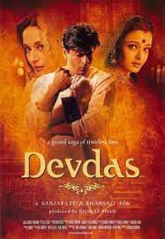
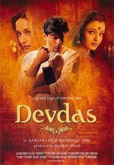
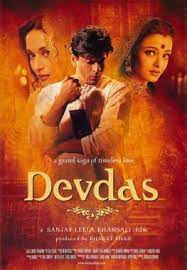

Early Life and Family
Khan was born on 2 November 1965 into a Muslim family in New Delhi.He
spent the first five years of his life in Mangalore, where his maternal
grandfather, Ifthikar Ahmed, served as the chief engineer of the port in
the 1960s.
Although Khan was given the birth name Shahrukh Khan, he prefers his
name to be written as Shah Rukh Khan, and is commonly referred to by the initialism SRK.
He married Gauri Chibber, a Punjabi Hindu, in a traditional Hindu
wedding ceremony on 25 October 1991, after a six-year courtship.They
have a son Aryan (born 1997) and a daughter Suhana (born 2000). In 2013,
they became parents of a third child, a son named AbRam, who was born
through a surrogate mother.
Both his elder children have expressed
interest in entering the entertainment industry; Khan has stated that
Aryan, who studied filmmaking at the USC School of Cinematic Arts in
California, aspires to become a writer-director, while Suhana, who
served as assistant director for Khan's film Zero (2018), is studying
drama and acting at NYU's Tisch School of the Arts for higher education.
Acting career
1992 - 1994
Film debut & Anti-hero

1995 - 1998
Anti-hero & Romantic Roles


1999 - 2003
Career challenges
 



2004–2009
Anti-hero & Romantic Roles

2004–2009: Resurgence Yeh Lamhe Judaai Ke,Main Hoon Na, Veer-Zaara, Swades, Kaal, Silsile, Paheli, Kabhi Alvida Na Kehna, Don- The Chase Begins Again, Chak De! India, Om Shanti Om, Bhoothnath, Rab Ne Bana Di Jodi, Billu 2010–2014: My Name Is Khan and expansion to action and comedy Dilwale 15 FAN 16 raees 17 zero 18 Paathan 23